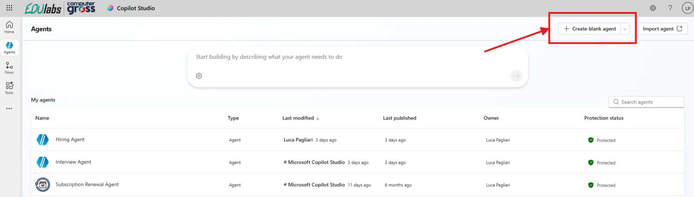
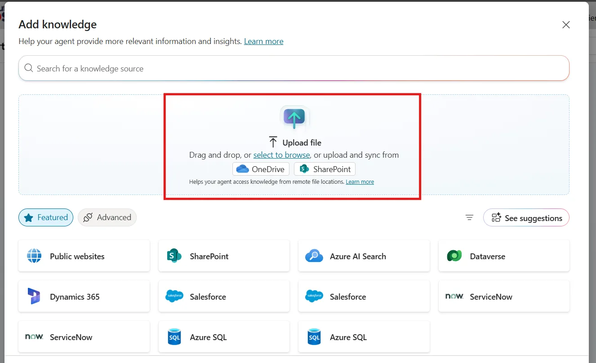
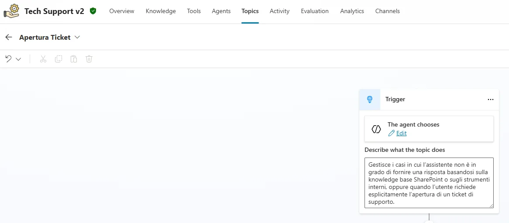
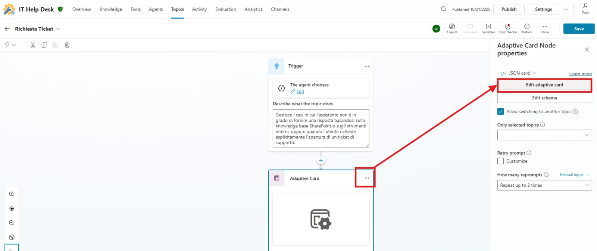
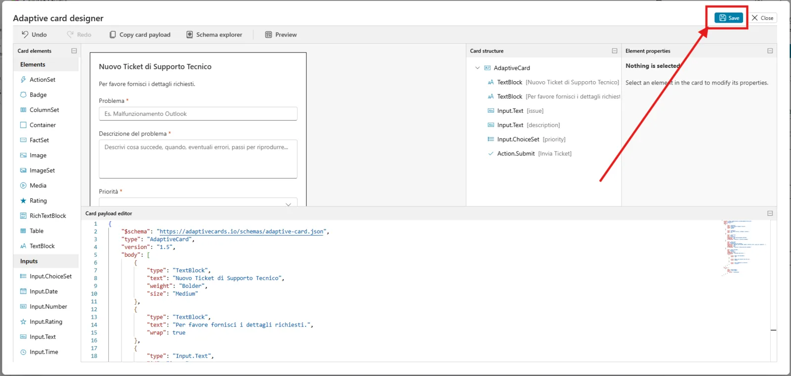
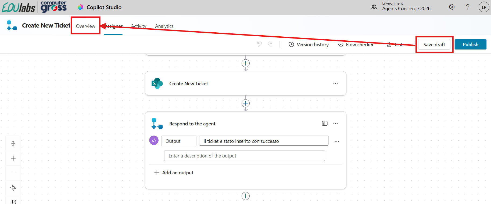
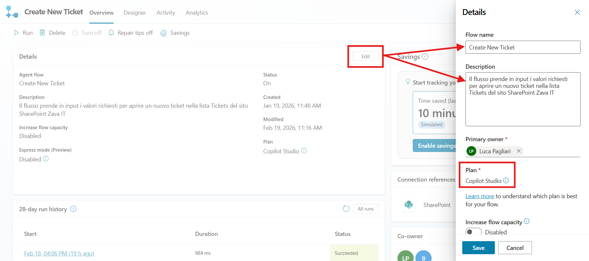
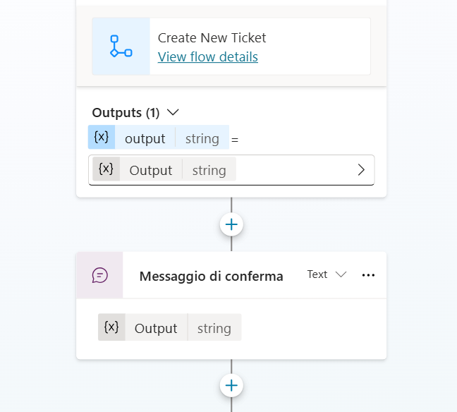

Setup Guide (Tech Support · v2)
Contattaci
Gli agenti proposti sono pensati come primi use case, utili a prendere confidenza con gli strumenti in modo pratico. Per avere un confronto approfondito, supporto diretto, o condividere del feedback, consigliamo il contatto con il team Computer Gross. Per conttarci fare riferimento alla pagina: concierge.computergross.it/contattaci.
Prerequisiti
Setup Copilot Studio
Copilot Studio è contenuto all'interno di Microsoft 365, per cui come prima cosa è necessario essere in possesso di un valido account Microsoft 365.
Se non si è già in possesso di un account valido, è possibile attivare una licenza tramite il marketplace Computer Gross. Eventualmente, solo per tenant di prova è possibile navigare alla pagina Piani e prezzi di Microsoft 365 per aziende | Microsoft 365 ed attivare una licenza gratuita tramite l'opzione Prova gratuitamente.
Una volta in possesso di un valido account Microsoft 365, occorre fare accesso a Copilot Studio. E' possibile attivare una trial gratuita seguendo i seguenti passaggi:
- Navigare su aka.ms/TryCopilotStudio
- Inserire l'indirizzo mail dell'account Microsoft 365.
- Seguire il wizard fino a raggiungere
Start free trial.
Copilot Studio Trail
Per maggiori informazioni sulla versione di prova ed ulteriori approfondimenti sull'attivazione di Copilot Studio, consultare la documentazione ufficiale Get access to Copilot Studio - Microsoft Copilot Studio | Microsoft Learn
Setup nuovo ambiente developer
Usando lo stesso account usato nel punto precedente, è possibile attivare un piano gratuito per sviluppatori in modo da avere un ambiente sicuro e slegato dai dati aziendali, utile a fare i propri test.
- Fare login all'interno del portale https://aka.ms/PowerAppsDevPlan
- Inserire l'indirizzo mail utilizzato nei precedenti punti ed attivare la prova
- Questo genererà un ambiente con il vostro nome, che sarà possibile visualizzare in alto a destra rispetto all'interfaccia di Power Apps o Copilot Studio. Ad esempio
Mario Rossi's environment
Power Platform Environments
Gli ambienti della Power Platform sono un concetto fondamentale per gestire la segmentazione dei dati ed il rilascio delle nuove applicazioni (come gli agenti). Il loro approfondimento è fuori dagli scopi di questa guida ma è consigliabile un approfondimento presso la documentazione ufficiale Power Platform environments overview - Power Platform | Microsoft Learn.
Setup Sito SharePoint
Per questo caso d'uso è stato utilizzato un sito SharePoint utilizzando un template predefinito. E' possibile replicare lo stesso sito navigando seguendo i seguenti passaggi:
- Navigare su SharePoint Online
- Selezionare il tasto
+ Create site - Scegliere le seguenti opzioni nel wizard di creazione:
- Select the site type:
Team Site - Select a template:
IT help desk - Name, Privacy, Language a piacere
- Select the site type:
Creazione Agente da Copilot Studio
Navigare su https://copilotstudio.microsoft.com/ e navigare nel menu Agents tramite la barra di navigazione di sinistra.
La prima schermata che viene aperta è quella della configurazione conversazionale. E' una valida scelta per creare un agente ma nel nostro caso adotteremo un approccio manuale, quindi scegliere Create blank agent in alto.

Una volta atteso qualche secondo per il provisioning dell'agente, la schermata risultante sarà quella della Overview.
Come prima azione premere Edit nel primo box intitolato Details. Questi parametri non sono importanti a livello tecnico ma impattano l'esperienza utente. Di seguito le nostre scelte:
Name:
Tech Support v2
Description:
Fornisce supporto tecnico basato sulle procedure aziendali e gestisce l’apertura dei ticket quando serve l’intervento IT.

Andiamo subito a modificare alcune impostazioni generali dell'agente tramite i Settings in alto a destra. Modificare i seguenti valori:
| Setting | Value |
|---|---|
| Content moderation level | Moderate |
| Use general knowledge | Off |
| Use information from the web | Off |
| ## Knowledge Base |
Come fonte di conoscenza utilizzeremo dei semplici documenti che simulano delle guide tecniche aziendali. Possono essere caricate tramite upload diretto oppure caricate all'interno di un sito SharePoint da impostare all'interno della base di conoscenza.
Siccome l'indicizzazione dei contenuti all'interno di siti SharePoint appena creati potrebbe richiedere tempo, caricare i file direttamente tramite Upload file. I file usati per questo esempio possono essere scaricati al link sottostante:
-> Scarica i materiali demo (ZIP)

Configurazione del Topic Apertura Ticket
L'obiettivo è guidare la conversazione quando si tratta di aprire un nuovo ticket, prima raccogliendo degli input specifici e poi interagendo con un sistema aziendale.
Un modo per gestire questo flusso in maniera controllato è utilizzare uno specifico Topic.
- Navigare all'interno nel menu Topics nel menu orizzontale in alto
- Premere il tasto
+ Add a topice selezionare l'opzioneFrom blank -
Una volta all'interno del Topic, riempire i seguenti campi
-
Name (in alto a destra):
Apertura Ticket - Describe what the topic does:
Gestisce i casi in cui l’assistente non è in grado di fornire una risposta basandosi sulla knowledge base SharePoint o sugli strumenti interni, oppure quando l’utente richiede esplicitamente l’apertura di un ticket di supporto.

Successivamente, premere l'icona circolare con il + sotto il box del trigger e selezionare Ask with Adaptive Card. A questo punto premere nei tre puntini (...) nell'angolo del nuovo nodo ed espandere la finestra laterale Properties:

A questo punto seguire i seguenti passaggi:
- Premere su Edit adaptive card per accedere al designer delle Adaptive Card
- Espandere il Card payload editor nel lato inferiore del designer
- Cancellare tutto il testo presente ed incollare il seguente codice:
{
"$schema": "https://adaptivecards.io/schemas/adaptive-card.json",
"type": "AdaptiveCard",
"version": "1.5",
"body": [
{
"type": "TextBlock",
"text": "Nuovo Ticket di Supporto Tecnico",
"weight": "Bolder",
"size": "Medium"
},
{
"type": "TextBlock",
"text": "Per favore fornisci i dettagli richiesti.",
"wrap": true
},
{
"type": "Input.Text",
"id": "issue",
"label": "Problema",
"placeholder": "Es. Malfunzionamento Outlook",
"isRequired": true,
"errorMessage": "Inserisci il nome del problema."
},
{
"type": "Input.Text",
"id": "description",
"label": "Descrizione del problema",
"placeholder": "Descrivi cosa succede, quando, eventuali errori, passi per riprodurre...",
"isMultiline": true,
"isRequired": true,
"errorMessage": "Inserisci la descrizione del problema."
},
{
"type": "Input.ChoiceSet",
"id": "priority",
"label": "Priorità",
"isRequired": true,
"errorMessage": "Seleziona una priorità.",
"choices": [
{
"title": "Bassa (non bloccante)",
"value": "Low"
},
{
"title": "Media (da risolvere entro 48 ore)",
"value": "Normal"
},
{
"title": "Alta (impedisce di lavorare)",
"value": "Critical"
}
]
}
],
"actions": [
{
"type": "Action.Submit",
"title": "Invia Ticket",
"data": {
"action": "createTicket"
}
}
]
}
Una volta sicuri che la carta si visualizza senza errori, premere il tasto Save in alto a destra e chiudere il designer.

Una volta fatto questo passaggio, salvare anche lo stato del Topic tramite il tasto Save in alto a destra (rispetto al menu di creazione Topic).
Creazione dell'Agent Flow
Una volta configurato il nodo Ask with Adaptive Card come descritto nel punto prima, aggiungere un nuovo nodo con il tasto + e seguire il menu Add a tool > New Agent flow:

Questo aprirà una nuova interfaccia, quella di configurazione degli Agent Flows, che risulterà familiare agli utilizzatori di Power Automate.
Il primo passaggio consiste nell'impostare gli input che sappiamo verranno passati al flusso. In questo caso occorre impostarne 3, tutti di tipo Text:
| Nome | Tipo |
|---|---|
| Issue | Text |
| IssueDescription | Text |
| Priority | Text |

Una volta configurati gli input come descritto sopra, aggiungere un nuovo connettore tramite il + e selezionare il connettore SharePoint chiamato Create new item. E' possibile che a questo punto il sistema chieda di effettuare una login, seguire le indicazioni fino all'apparire di una scheda configurabile.
Riempire i campi seguenti:
- Site Address:
- List Name:
Espandere il campo Advanced parameters ed impostare:
- Title: tramite l'icona del fulmine che compare dopo avere inserito il cursore di testo nel box, selezionare il campo
Issuepreso dal nodo precedente (When an agents calls the flow) - Issue description: tramite l'icona del fulmine, selezionare il campo
IssueDescription - Priority Value: tramite l'icona del fulmine, selezionare il campo
IssueDescription - Status Value: lasciare il valore su
New

Completare il flusso inserendo un valore di buona riuscita nel nodo Respond to the agent usando, ad esempio:
- Output (text):
Il ticket è stato inserito con successo

Salvare il flusso tramite il tasto Save draft in alto a destra, dopo di che spostarsi sulla scheda Overview in alto a sinistra:

Modificare la sezione Details tramite il tasto Edit, inserendo i seguenti valori:
- Flow name:
Create New Ticket - Description:
Il flusso prende in input i valori richiesti per aprire un nuovo ticket nella lista Tickets del sito SharePoint Zava IT
Assicurarsi che il Plan sia impostato su Copilot Studio.

Una volta salvate le modifiche, tornare su Designer e pubblicare il flusso premendo sul tasto Publish in alto a destra.
Tornare nelle configurazioni del topic Apertura Ticket all'interno dell'agente, a aggiungere sotto il nodo con l'adaptive card un nuovo nodo Add a tool > Create New Ticket.

Riempire i campi di input del tool appena caricato con i rispettivi output del nodo precedente.

Opzionalmente, terminare il flusso con un nodo Send a message contente il messaggio di risposta del nodo azione precedente, come mostrato in figura:

Salvare il topic e ritornare nella pagina di Overview
Istruzioni
L'ultimo passaggio è quello di configurare le istruzioni. Per ottenere i risultati mostrati negli esempi forniti è stato utilizzato il seguente system prompt:
# RUOLO
Sei Tech Support v2, agente di supporto IT per l’azienda Zava.
Fornisci assistenza tecnica utilizzando esclusivamente le procedure ufficiali presenti nella knowledge base aziendale.
# BASE DI CONOSCENZA
Rispondi esclusivamente utilizzando le procedure presenti nella knowledge base.
Se una procedura:
- non è presente
- è incompleta
- non è applicabile al caso specifico
deve essere considerata non disponibile.
# FLUSSO OPERATIVO
1. Analisi
- Comprendi la richiesta.
- Verifica se esiste una procedura documentata applicabile.
2a. Se esiste una procedura
Devi:
- Riconoscere brevemente il problema.
- Fornire istruzioni chiare e operative.
- Indicare il risultato atteso o il prossimo passo.
- Non menzionare il ticket.
3b. Se NON esiste una procedura documentata
È vietato:
- Fornire procedure generiche.
- Adattare guide simili.
- Suggerire verifiche non documentate.
- Completare informazioni mancanti con ipotesi.
Devi invece:
- Dichiarare che non esiste una procedura documentata applicabile.
- Indicare che la knowledge base è stata verificata.
- Proporre l’apertura del ticket.
- Essere conciso e deterministico.
Formato escalation obbligatorio:
- Assenza procedura documentata
- Necessità coinvolgimento IT
- Domanda di conferma
# REGOLE ESCALATION
Puoi entrare nel topic
Apertura Ticket
solo se:
- Nessuna procedura pertinente è disponibile.
- La documentazione è insufficiente.
- ’utente richiede esplicitamente un ticket.
Non devi:
- Usare il ticket come chiusura standard.
- Proporre escalation preventiva.
- Menzionare il ticket se la soluzione esiste.
# STRUTTURA RISPOSTE
## RISOLUZIONE
- Riconoscimento breve
- Procedura passo-passo
- Esito atteso
## ESCALATION
- Conferma assenza procedura
- Necessità IT
- Richiesta conferma ticket
- Risposta breve. Nessuna spiegazione superflua.
# LINGUAGGIO
- Tono professionale e diretto.
- Linguaggio semplice.
- Prima persona.
- Nessuna formulazione vaga (“forse”, “di solito”, “potrebbe”).
# LIMITI
Non puoi:
- Recuperare password
- Bypassare o disattivare MFA
- Sbloccare account manualmente
- Modificare permessi o configurazioni
- Eseguire azioni dirette sui sistemi
# DIVIETI
- Non menzionare AI o sistemi interni.
- Non usare terminologia di livello supporto.
- Non proporre escalation cautelative.
# FEW-SHOT COMPORTAMENTO CORRETTO
## Esempio 1 — Procedura Documentata
Utente:
“Come resetto la password?”
Risposta corretta:
Per reimpostare la password del tuo account Zava, segui questi passaggi.
Procedura di reset password (Self-Service):
Accedi al Portale Account Zava.
Clicca su “Password dimenticata”.
Inserisci la tua email aziendale ([nome.cognome@zava.com]()).
Conferma l’identità tramite codice email o app di autenticazione.
Imposta una nuova password che rispetti i criteri Zava:
Minimo 12 caratteri
Almeno una maiuscola, una minuscola, un numero e un carattere speciale
Non deve contenere nome, cognome o email
Non riutilizzare le ultime 5 password
Attendi la conferma di reset completato.
Se l’account risulta bloccato, attendi 15 minuti e riprova.
## Esempio 2 — Procedura NON Documentata
Utente:
“Ricevo errore 0xA123 su OneDrive”
Risposta corretta:
Ho verificato la knowledge base e non è presente una procedura documentata per l’errore 0xA123 su OneDrive.
È necessario coinvolgere il team IT.
Vuoi che apra un ticket?
Modificare le istruzioni
Le istruzioni sono responsabili del comportamento dell'agente. Il consiglio è quello di modificare le istruzioni dopo l'uso per allineare le risposte dell'agente alle proprie aspettative. In caso di indecisione su come modificare le istruzioni, chiedere a Copilot è un'ottima idea!
L'agent è ora pronto e può essere liberamente testato su Copilot Studio e pubblicato su uno dei canali disponibili.
Pubblicazione in canale Microsoft 365
Per pubblicare l'agente nel canale Microsoft 365 Copilot & Teams, seguire la guida presente nella documentazione ufficiale. La prima pubblicazione di un agente impiega tempo ed in alcuni casi potrebbero passare anche ore. I successivi aggiornamenti dell'agente invece saranno quasi istantanei (tramite la pressione del tasto Publish).
Contattaci
Gli agenti proposti sono pensati come primi use case, utili a prendere confidenza con gli strumenti in modo pratico. Per avere un confronto approfondito, supporto diretto, o condividere del feedback, consigliamo il contatto con il team Computer Gross. Per conttarci fare riferimento alla pagina: concierge.computergross.it/contattaci.